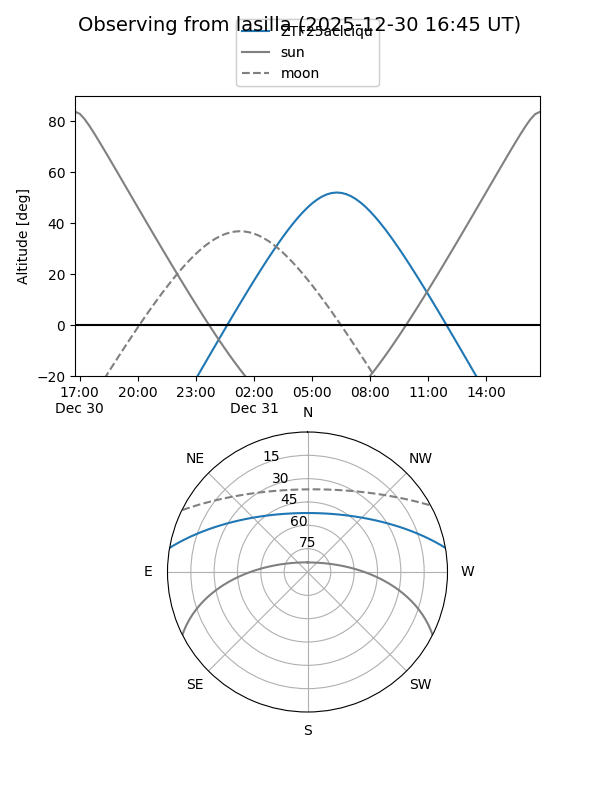

ZTF25aclciqu
Target ZTF25aclciqu at 2026-01-09 12:49
Aliases and brokers:
FINK: link
Lasair: link
ALeRCE: link
alt names
ZTF25aclciqu (ztf,fink_ztf)
Coordinates:
equatorial (ra, dec) = 122.9977,+8.73622
equatorial (HMS+DMS) = 08:11:59.45,+08:44:10.40
galactic (l, b) = (214.1660,+21.84600)
Flags:
Photometry:
last ztfg=13.60
1 ztfg detections
Lightcurve

Visibility


Additional plots